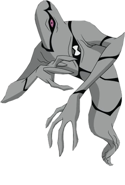

Fantasmático é um alien fantasma com poderes sombrios, assombrando os inimigos ao mostrar o que há debaixo do seu manto e tendo uma intenção obscura, o que será que ele quer?
Sua verdadeira forma é monstruosa, assustando qualquer um que a encara. Ele é capaz de atravessar paredes, ficar invisível e possuir outros seres. Porém é vulnerável na luz, queimando sua pele.
Espécie: Ectonurita
Planeta de Origem: Anur Phaetos
Curiosidade:
Sua memória e consciência são capazes de se manter em uma única fita de DNA, essa capacidade fez com que a amostra original usada no relógio de Ben se recuperasse, saindo do relógio e... BUU!
